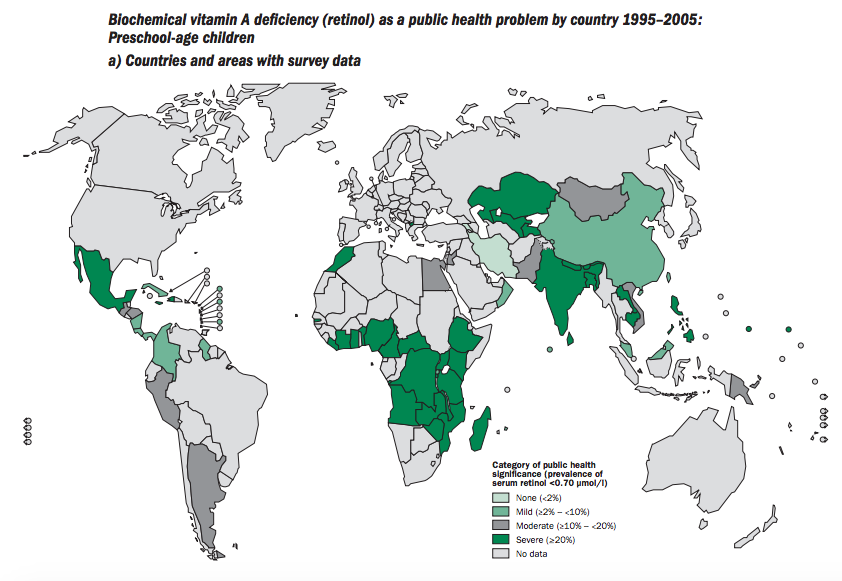
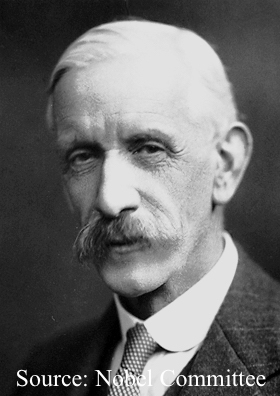
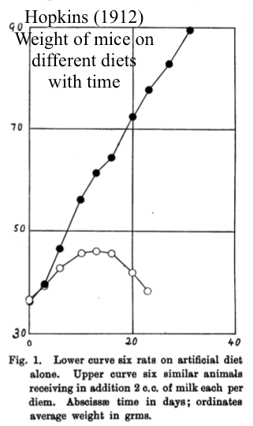
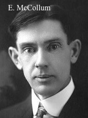
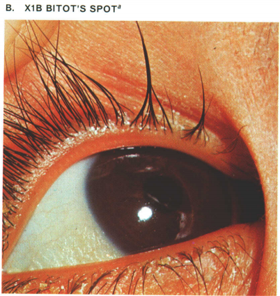
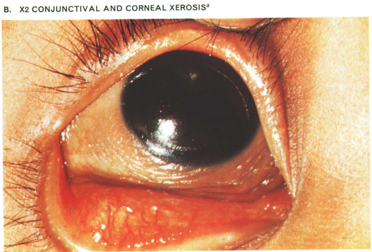
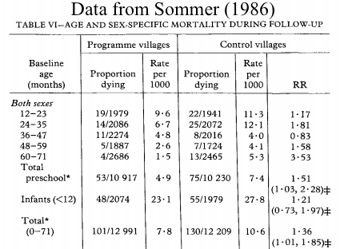
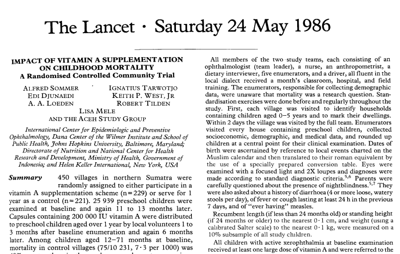
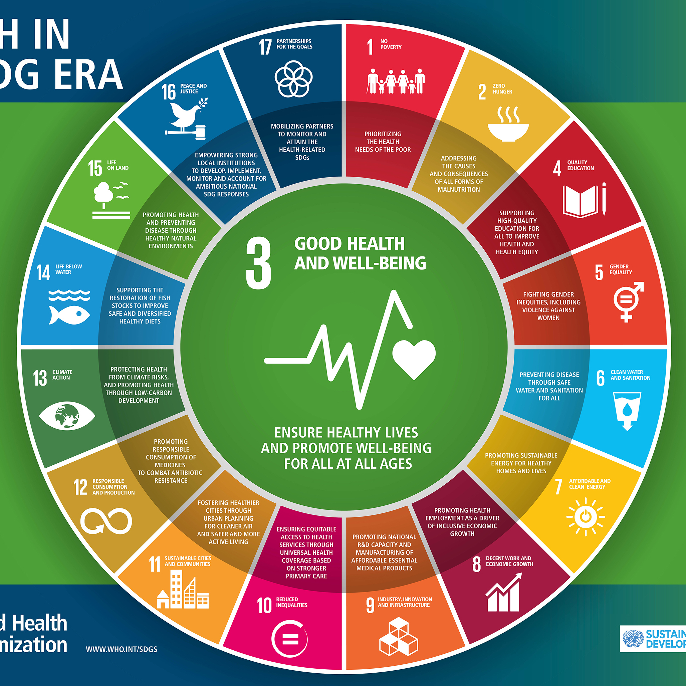

<!DOCTYPE html>
<html><!--
    <head>
        <title>Michael Shin</title>
        <meta charset="utf-8"/>
        <link rel="stylesheet" href="https://maxcdn.bootstrapcdn.com/bootstrap/3.3.7/css/bootstrap.min.css"/>
        <link rel="stylesheet" type="text/css" href="vitamina/vitamina.css">
        <link rel="shortcut icon" href="favicon.ico">
        <script src="https://ajax.googleapis.com/ajax/libs/jquery/1.12.4/jquery.min.js"></script>
        <script src="https://netdna.bootstrapcdn.com/bootstrap/3.0.3/js/bootstrap.min.js"></script>
        <script type="text/javascript" src="https://www.gstatic.com/charts/loader.js"></script>
        <script type='text/javascript' src='vitamina/vitamina.js'></script>
    </head>
    <body>
        <header class="container">
            <div class="col-sm-4 col-sm-offset-2"><a href='http://www.michaelhshin.com'></a></div>
            <nav class="col-sm-4">
                <p><a class="btn btn-default" href="http://www.michaelhshin.com/bio">About Me</a></p>
                <div class="btn-group">
                    <button class="btn btn-default dropdown-toggle" type="button" data-toggle="dropdown">Articles
                        <span class="caret"></span>
                    </button>
                    <ul class="dropdown-menu" role="menu">
                        <li><a href="http://www.michaelhshin.com/vitamina">Dr. Alfred Sommer and Vitamin A</a></li>
                        <li><a href="http://www.michaelhshin.com/secretsanta">Mathematical Problem with Secret Santa</a></li>
                    </ul>
                </div>
                <p><a class="btn btn-default" href="mailto:shin.michael930@gmail.com?Subject=Reaching%20Out">Contact</a></p>
            </nav>
        </header>
        <hr>
        <div class='container'>
            <div><h2 style='text-align: center'>Dr. Alfred Sommer and Vitamin A</h2></div>
            <br>
            <a href='http://apps.who.int/iris/bitstream/10665/44110/1/9789241598019_eng.pdf'></a>
            <a href='http://apps.who.int/iris/bitstream/10665/44110/1/9789241598019_eng.pdf'><h6 class='text-center'>Source: WHO</h6></a>
            <br>
        </div>
        <div class='col-sm-8 col-sm-offset-2'>
            <p>After Dr. Alfred Sommer, a Johns Hopkins ophthalmologist, published his 1986 article in the prestigious medical journal, <i>The Lancet</i>,
            on how just 2 cents worth of vitamin A supplementation per child reduced childhood mortality rate by one-third during a large randomized clinical trial, he did not receive the response that he expected.</p><br>
            <p>The pediatric and nutrition community thought that it was ridiculous to believe that a 2 cent, biannual dose of vitamin A could have that significant of an effect on the survival of children.
            These impoverished children in the developing world, who were the subject of Dr. Sommer&rsquo;s study, were exposed to so many other health risks,
            that the pediatric and nutrition communities were incredulous when presented with the notion that such a minute addition to their diet would make much difference.</p><br>
            <p>Nils Daulaire, a former assistant secretary for the US Department of Health and Human Services, summarized the atmosphere at the time:</p><br>
            <blockquote>Here is this ophthalmologist who may know about eyes, but what does he know about children and their lives?</blockquote><br>
            <br>
            <h3>Discovery</h3><br>
            <p>Vitamin A is a class of organic molecules and a micronutrient &ndash; nutrients humans require in small amounts throughout life.
            However, until the early 20th century, people were unaware that animals require minute quantities of vitamins and minerals to survive.</p><br>
            <a href='https://www.nobelprize.org/nobel_prizes/medicine/laureates/1929/hopkins-bio.html'></a>
            <p>It was the work of Sir Frederick Hopkins at Cambridge University who discovered that normal animal growth and survival requires tiny quantities of then unknown substances, for which he won the 1929 Nobel Prize in Physiology or Medicine.</p><br>
            <p>He conducted a series of feeding experiments in which he compared the growth of mice when fed protein, carbohydrates, fat, minerals, and water, with the growth of mice when fed the same diet but with a small addendum of milk.
            The mice who were not fed milk exhibited either no growth or much slower growth than those who consumed milk.</p><br>
            <p>After he accounted for potential confounding factors such as milk affecting nutritional absorption in the intestines and differences in appetite, he concluded that:</p><br>
            <blockquote>the presence of a most extraordinarily small remainder of the substance. . . can affect the physiological value of. . . diets.</blockquote><br>
            <div class='row'>
                <a href='https://www.ncbi.nlm.nih.gov/pmc/articles/PMC1512834/'></a>
            </div>
            <a href='https://www.ncbi.nlm.nih.gov/pmc/articles/PMC1512834/'><h6 class='text-center'>Hopkins, F. (1912)</h6></a>
            <p>Sir Hopkins named these yet unknown compounds, <q><i>accessory factors</i>.</q></p><br>
            <p>In 1912, after managing to isolate a form of Hopkins&rsquo; <q><i>accessory factors</i>,</q> Dr. Casimir Funk, a Polish biochemist, coined the portmanteau <q><i>vitamine</i></q> after <i>vital</i> and <i>amine</i>, mistakenly believing that what we know today as vitamins were all amines.
            The final e was dropped in 1920 to form the word <i>vitamin</i> when this mistake was realized.</p><br>
            <p>By 1913, Dr. Elmer McCollum and his student, Marguerite Davis, at the University of Wisconsin- Madison discovered a fat soluble <q><i>accessory factor</i>.</q>
            They conducted animal feeding experiments and fed their mice protein, carbohydrates, salts, water, and lard or olive oil.</p><br>
            <a href='https://en.wikipedia.org/wiki/Elmer_McCollum#/media/File:EVMcCollum-crop-UW.jpg'></a>
            <a href='http://www.vindustries.com/racine/0_house_on_the_hill.shtml'></a>
            <p>Their mice grew for several months but then stopped. The female mice did not appear to be able to produce enough milk for their young. McCollum and Davis began feeding several of their mice egg extract or butter and these mice began growing again.</p><br>
            <p>McCollum and Davis identified the accessory factor that existed in egg extract and butter as <q><i>fat-soluble A</i>,</q> which became known as vitamin A.</p><br>
            <p>By 1928, Dr. Edward Mellanby and Dr. Harry Green at the University of Sheffield championed the term <q><i>anti-infective agent</i></q> to describe vitamin A, based on a decade worth of prior research by himself and many other researchers that showed an association between vitamin A deficiency and an increased susceptibility to infection.</p><br>
            <p>Throughout the 1930s, Vitamin A&rsquo;s effect on the immune system and the prognosis of various infectious diseases was still being actively researched. However, the development of powerful sulfonamide based antibiotics quickly replaced interest in using vitamin A as an <q><i>anti-infective agent</i>.</q>
            These sulfa antibiotics began the <q>antibiotic revolution</q> in medicine and were extremely effective in reducing mortality from infectious diseases.</p><br>
            <p>However, as antibiotics claimed more of the research spotlight, research in vitamin A dwindled from the 1940s onwards, until Dr. Alfred Sommer&rsquo;s work in the 1980s.</p><br>
            <br>
            <h3>Vitamin A and Mortality</h3><br>
            <p>Dr. Alfred Sommer travelled to Indonesia in 1976, three years after earning his MHS degree from Johns Hopkins University, to study xerophthalmia.
            Decades ago, researchers had established an association between vitamin A deficiency and xerophthalmia, a debilitating condition also known as dry eyes, in which the eyes fail to produce tears and wrinkles up.</p><br>
            <div class='row'>
                <div class='thumbnail text-center'>
                    <br><br>
                    <div class='caption' id='caption1'>
                        <p>Click to remove filter</p>
                    </div>
                </div>
            </div>
            <div class='row'>
                <div class='thumbnail text-center gap-bottom'>
                    <br>
                    <div class='caption' id='caption2'>
                        <p>Click to remove filter</p>
                    </div>
                </div>
            </div>
            <a href='http://apps.who.int/iris/bitstream/10665/41197/1/WHO_TRS_590.pdf'><h6 class='text-center'>Source: WHO</h6></a><br>
            <p>Xerophthalmia, most common in young children, can lead to buildup of keratin clumps within the eye (Bitot&rsquo;s Spot), night blindness, and finally, progression into corneal ulceration and total blindness.
            At the time, Indonesia was the perfect place for Dr. Sommer to study xerophthalmia.
            A combination of poverty and inadequate nutrition led to over 60,000 pre-school-age Indonesian children becoming xerophthalmic each year.</p><br>
            <p>The treatment recommended by the World Health Organization at that time included an intramuscular injection of water-soluble vitamin A upon diagnosis. As compared to oral vitamin A, an injectable dose was preferred due to a faster rise in serum-vitamin A levels.
            There was also concern that the common conditions of diarrhea and protein-energy malnutrition (PEM) would hinder vitamin A absorption when taken orally, decreasing its efficacy.</p><br>
            <p>However, this was an impractical treatment option in the developing world, especially since injectable water-soluble vitamin A was not commercially available at the time.
            Even if it was, there would be an overwhelming cost to have trained medical personnel inject thousands of children with sterile needles, especially in a country with a GDP per capita of under $300 (2017 dollars) at the time.</p><br>
            <div class='embed-responsive embed-responsive-4by3'>
                <iframe class='center-block' src="http://data.worldbank.org/share/widget?indicators=NY.GDP.PCAP.CD&locations=ID" frameBorder='0'></iframe>
            </div><br>
            <p>Dr. Sommer wondered if oral oil-miscible vitamin A tablets would just be as effective as intramuscular water-miscible vitamin A injections.
            In a small controlled trial of 114 children with corneal xerophthalmia, he gave 69 children 200,000 IU oil-miscible vitamin A orally (40x the FDA DV of vitamin A, equivalent to eleven cups of raw carrots) and a matched group (comparable by age, hospital admission prevalence, mortality, severity of condition, prevalence of diarrhea and PEM) of 45 children 100,000 IU water-miscible vitamin A intramuscularly.
            Both groups were also given 100,000 IU oral vitamin A the next day.</p><br>
            <p>The clinical response of the two treatment groups was essentially the same, with 95% of the children improving or healing after eight days.
            Most children were cured by the next day. Even children who had corneal ulcers and were on the verge of blindness were healed.</p><br>
            <p>He had shown that a 2-cent oral dose of vitamin A was much cheaper, practical, and just as effective as the WHO&rsquo;s recommended treatment. Now, xerophthalmia treatment could be easily administered by a child&rsquo;s mother, without needing a needle and syringe.</p><br>
            <p>His results were published in the March 15th, 1980 issue of <i>The Lancet</i>. Although Dr. Sommer presented his findings at a WHO/UNICEF meeting, the existing recommended treatment was not changed. Dr. Sommer&rsquo;s work was relegated to a footnote:</p><br>
            <blockquote style='font-family: monospace'>In the absence of water-miscible, injectable vitamin A, oral, oily vitamin A could be used in its place.</blockquote><br>
            <p>Undiscouraged, Dr. Sommer continued his research of xerophthalmia in Indonesia. He was investigating why some children developed xerophthalmia while neighboring children did not. While he was crunching the numbers for the 4500 children across six villages under his observation, he noticed something strange.</p><br>
            <p>As he tracked the progress of the visits of the children, he discovered that the children with mild xerophthalmia, as evidenced by night blindness and buildup of keratin clumps, were less likely to show up for their quarterly check-up than those not afflicted.</p><br>
            <p>He found out that these children did not show up because they were dead. Moreover, these children were not dying from eye diseases but from common childhood illnesses like measles. Perhaps a lack of vitamin A, which leads to the development of xerophthalmia, also causes children to become vulnerable to other diseases.</p><br>
            <p>He published his findings in <i>The Lancet</i> but his article failed to generate much response. What he needed was stronger data to back his hypothesis.</p><br>
            <p>He recruited nearly 26,000 preschool children across 450 villages in northern Sumatra, Indonesia to confirm his observation. In this randomized controlled community trial, the children in around half of the villages were provided 200,000 IU vitamin A capsules twice over the one year length of the study, while the rest served as controls.
            Children who presented with active xerophthalmia at the beginning of the study were referred to a local health clinic and not included in the study.</p><br>
            <div class='row'>
                <a href='https://www.ncbi.nlm.nih.gov/pubmed/2871418'></a>
            </div>
            <a href='https://www.ncbi.nlm.nih.gov/pubmed/2871418'><h6 class='text-center'>Sommer, A. et al (1986)</h6></a>
            <p>After the year-long study, the results showed a 34% reduction in the death rate of children ages 6 months to 5 years in villages where vitamin A supplements were given versus the control villages.
            Just 2 cents worth of vitamin A supplementation per child reduced the childhood mortality rate by one-third.</p>
            <div class='row'>
                <a href='https://www.ncbi.nlm.nih.gov/pubmed/2871418'></a>
            </div>
            <a href='https://www.ncbi.nlm.nih.gov/pubmed/2871418'><h6 class='text-center'>Sommer, A. et al (1986)</h6></a>
            <p>He published his breakthrough results in The Lancet but became the target of immediate criticism.</p><br>
            <p>Experts in pediatrics and nutrition wrote letters to The Lancet in droves, claiming that it was <q>a spurious association</q> and was <q>too good to be true.</q> They maintained that it would be foolish to believe that 2-cent biannual doses of vitamin A could possibly lower childhood mortality.
            The critics attacked each piece of Dr. Sommer&rsquo;s work- the methodology, the ethics, the conclusions. </p><br>
            <p>Dr. Sommer&rsquo;s article had garnered mostly negative responses but negative publicity is still publicity. Other research groups began conducting their own trials, even if to debunk Dr. Sommer&rsquo;s work.</p><br>
            <p>Dr. Sommer conducted a replication studies of his own in Nepal, as did other researchers in developing Asian and African nations.</p><br>
            <p>By 1992, there were six meticulously conducted, large-scale randomized controlled trial studies across four developing nations. The data from these studies were striking.
            They showed a decreased mortality among children ages 6 months to five years of between 19% to 54%. </p>
            <div class='chart' id="columnchart_values"></div>
            <h6 class='text-center' id='chartcaption'>IDN = Indonesia</h6>
            <a href='http://www.nature.com/nm/journal/v3/n10/abs/nm1097-1061.html'><h6 class='text-center' id='chartsource'>Sommer, A. (1997)</h6></a>
            <p>That same year, Dr. Sommer organized an international meeting in Bellagio, Italy, between top investigators in childhood mortality to come to a consensus on the effects of vitamin A supplements, or lack thereof, on childhood mortality.
            The group came to a unanimous consensus and Dr. Sommer published the meeting&rsquo;s summary in <i>The Lancet</i>.</p><br>
            <p>By 1993, the director general of the WHO and the executive director of UNICEF instituted a policy, based on Dr. Sommer&rsquo;s works, that all countries should provide a large, oral vitamin A supplement to children at risk of vitamin A deficiency.
            UNICEF included vitamin A coverage rates to its country health metrics.</p><br>
            <p>Since instituting this policy, the lives of millions of children have been saved.
            In the ten years between 1998 and 2008, the WHO estimated that vitamin A supplementation had saved 1.25 million lives across 40 nations.</p><br>
            <p>The Copenhagen Consensus, an organization of economists that recommends cost-effective ways to improve health and development, estimated that an annual $60 million investment in vitamin A supplements with zinc, would yield benefits of over $1 billion- a 17-fold return on investment.</p><br>
            <p>This makes vitamin A supplementation one of the most cost effective health interventions and investments in development.</p><br>
            <p>However, there is still much work to be done.</p>
            <div class='row'>
                <a href='http://apps.who.int/iris/bitstream/10665/44110/1/9789241598019_eng.pdf'></a>
            </div>
            <h6 class='text-center'>Prevalence of Vitamin A deficiency</h6>
            <a href='http://apps.who.int/iris/bitstream/10665/44110/1/9789241598019_eng.pdf'><h6 class='text-center'>Source: WHO</h6></a>
            <p>The WHO estimates that there are still a jaw-dropping 250 million preschool-aged children who are vitamin A deficient. Between 250,000 to 500,000 vitamin A deficient children become blind every year, with half of them dying within one year of becoming blind.</p><br>
            <div class='row'>
                <a href='http://www.who.int/topics/sustainable-development-goals/sdg-banner.jpg?ua=1'></a>
            </div>
            <h6 class='text-center'>UN&rsquo;s 17 Sustainable Development Goals</h6>
            <a href='http://www.who.int/topics/sustainable-development-goals/sdg-banner.jpg?ua=1'><h6 class='text-center'>Source: WHO</h6></a>
            <p>Vitamin A supplementation were an essential component in reaching the fourth of the UN&rsquo;s Millennium Development Goals- reducing child mortality by two thirds between 1990 and 2015. In 2016, the UN launched their 17 Sustainable Development Goals.</p><br>
            <p>Vitamin A supplementation will undoubtedly continue playing a major role in reaching the UN&rsquo;s third goal: to lower under-5 mortality to 25 per 1000 live births for all countries by 2030.</p><br><br><br>
        </div>        
        <footer class="container">
            <div class="row">
                <p class="col-sm-6 col-sm-offset-3 text-center">Click on images for their sources.</a></p>
            </div>
            <div class="row">
                <p class="col-sm-6 col-sm-offset-3 text-center">For a complete list of sources, <a href="mailto:shin.michael930@gmail.com?Subject=Sources%20Request">contact me.</a></p>
            </div>
            <div class="row">
                <p class="col-sm-4 col-sm-offset-4 text-center">Michael Shin 2017</p>
            </div>
        </footer>
    </body> >
</html>
